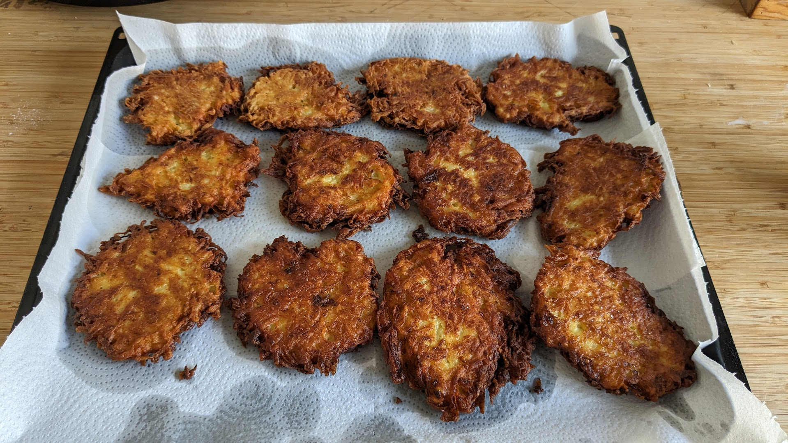

Latkes

Pour 4 personnes :
- 1.2kg de pommes de terres (plutôt farineuses)
- 200g d'oignons
- 50g de farine
- 3 œufs
- De l'huile de friture, par exemple d'arachide
- Du sel
- Laver les pommes de terre, les râper, et les saler. Les mettre dans un torchon, refermer le torchon, et presser fort pour éliminer le plus de jus possible.
- Éplucher et râper les oignons, les mélanger avec les pommes de terre, la farine, et les œufs.
- Faire chauffer environ 1cm d'huile de friture dans une poêle à hauts bords, jusqu'à ce qu'elle atteigne une température d'environ 165°C. Mélanger vite fait le mélange, en prendre une belle cuillère, et la mettre délicatement dans la poêle en aplatissant pour faire une forme de galette. Idéalement, il faut que l'huile atteigne environ la moitié ou les deux tiers du latke.
- Lorsque le latke a pris une belle couleur brune sur le dessous, le retourner avec une spatule, et faire frire de l'autre côté. On peut paralléliser l'opération en mettant plusieurs galettes dans la poêle à la fois. Tout du long de l'opération, il faut garder la température de l'huile friture entre 160°C et 180°C.
- Lorsque les latkes sont prêts, les disposer sur du papier absorbant, par exemple dans un four à 80°C pour que ça reste croustillant.
- Déguster chaud, traditionnellement avec de la compote de pommes ou de la crème aigre, mais on peut faire un peu ce qu'on veut ; par exemple, du saumon fumé ou un œuf (poché ou au plat), c'est super bon.
Retour à la liste des recettes